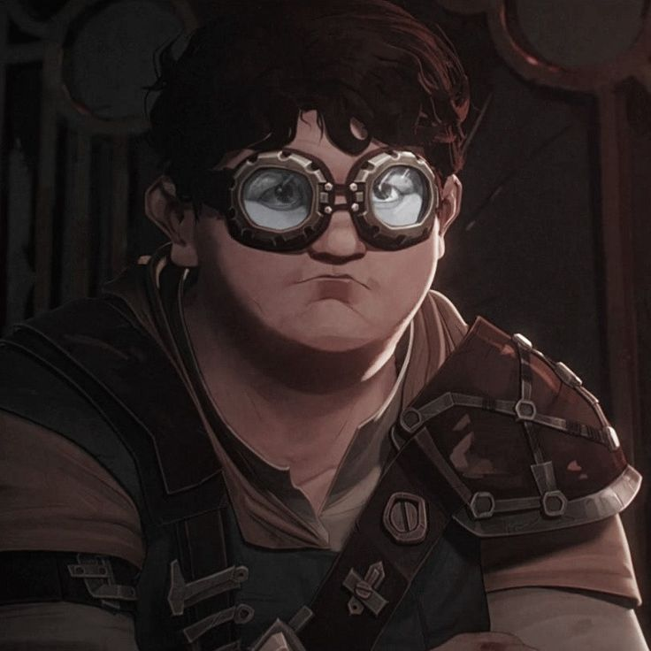
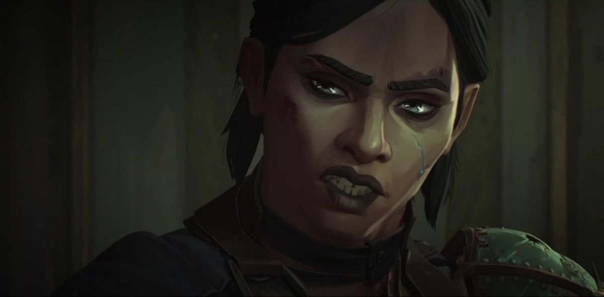

* Spoilers Below *
Characters made for the show:
* Spoilers Below *
Characters made for the show:
Sky Young is so underated its SAD. She dosen’t have much screen time and you don’t even know her name without paying close enough attention to what other characters say. She was Viktors assistant and secretly adored the man, was even potentially a childhood friend, and when she saw he was in trouble she lept to help him without a second thought and it got her KILLED! I don’t care about spoilers she deserved better!!
“When people look up to you, you don’t get to be selfish. You say run, they run. You say swim, they dive in. You say light a fire, they show up with oil. But whatever happens, it’s on you.”
Vander takes in Vi and Jinx as well as two other kids when they are orphaned in a civil war he helped start. Bartends ‘The Last Drop’ and tries to keep the kids and his people out of trouble, but when trouble came he tried his best to protect his kids. He is only in episodes 1-3 but is implied to return.
“We can’t change what fate has in store for us, but we don’t have to face it alone.”
A very wealthy and powerful political figure, she is the reason Jayce and Viktor get anywhere with Hextech. However rising conflict and a visit from her mother makes the job harder.
“Whats the matter Mylo? Worried Powder is gonna beat you again!”
The big muscle of Vi and Powder’s squad when they were kids.
“She jinxes every job!”
Also part of the group, but would consantly pick on Powder.
“The Vander I knew, the one who built the underground. He wouldn’t be afrid to fight.”
This one betrayed Vander! But other than that she’s an alright character who serves as an antagonist to Vi and Jinx.
“You see, power – real power – dosen’t come to those who were born strongest or fastest or smartest. No. It comes to those who will do anything to achieve it.”
Basically the villan, encourages Jinx’s unhealthy behaviours but does love her as his own after the incident witch resulted in Jinx being alone, however he does anything to get what he wants and honestly, that makes it worse for everyone.
“You’re a Councilors daughter. Your actions reflect on the entire body.”
Caitlyn’s mum, a councilor and political figure, and supports Jayce.
“.. But if you don’t accept certain realities, I fear you’ll end up like General Parleque, slaughtered, with your eyes closed.”
Mel's mother, a warlord and a manipulator.
“..And I’m gonna bury the lot of you!”
A corrupt cop, is stuck under Silco's thumb because of his own actions.

“..Begs the question young Kiramman, what are you shooting for?”
Former enforcer sheriff, did her best to keep the peace, set Caitlyn on her path to be an enforcer.